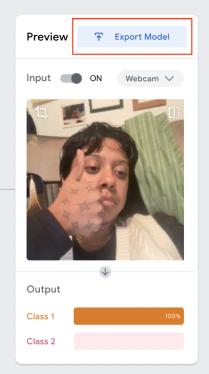
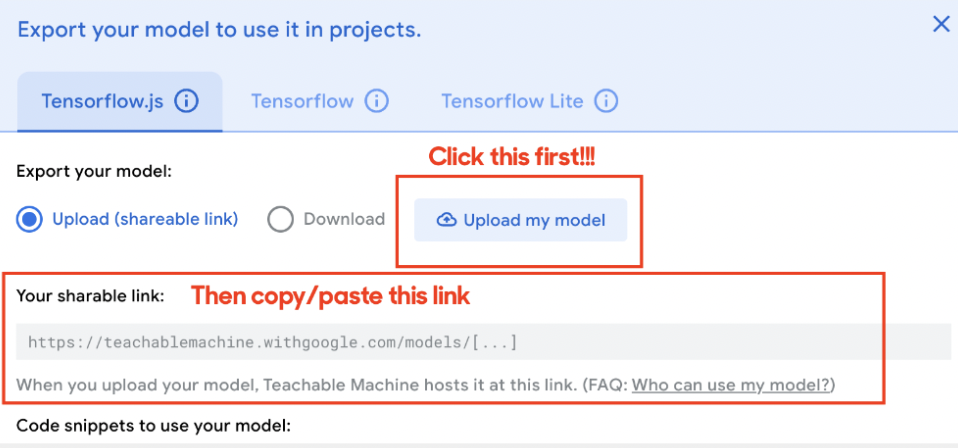

Teachable Machine
due Sep 27Read/Watch (Choose one):
Part I: Teachable Machine
Go to teachablemachine.withgoogle.com and watch the video. Create a simple image, audio, or pose model with two or more “classes” (categories). Save your model and paste the shareable link in the #assignments channel along with a sentence or two reflecting on the process.
To get shareable link:
1. Click export model
2. Click upload and then copy the link
Instructions for submission:
- Save your model and paste the shareable link in the #assignments channel along with a sentence or two reflecting on the process.